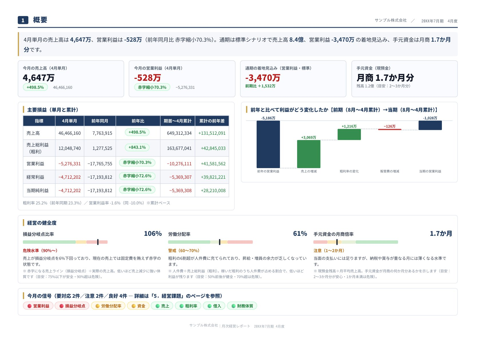

税務・会計顧問
当事務所では会計をとおして経営課題を共有し、改善提案を行う税務顧問サービスを行っています。
地方の中小企業では財務担当者を十分に揃えることが難しく、そのため自社内で会計や財務指標を踏まえた経営を実行していくことはなかなか難しいことと思います。そのような中において当事務所は、会計や財務指標をわかりやすく伝え、お客様それぞれに合った税務顧問サービスを提供することを心がけています。
毎月お渡しする「経営レポート」
顧問契約のお客様には、毎月の試算表をまとめるだけでなく、「今どこに課題があり、どこに手を打てばよいか」までひと目でわかる経営レポートをお渡ししています。専門的な決算書が苦手な方でも、グラフと短いコメントで自社の状態をつかめます。
- 数字をグラフで直感的に 売上・利益・資金の推移が、表を読まなくてもひと目でわかります。
- 経営課題を自動で抽出 「要対応・注意・良好」を色分けし、優先すべき点から示します。
- 打ち手の効果を試算 「値上げ1%」など、改善策のインパクトを金額で確認できます。
- 資金繰りを先読み 手元資金が何か月分あるか、返済余力まで把握できます。

クリックで拡大掲載しているレポートは、内容をご紹介するためのサンプル（架空の「サンプル株式会社」）です。数値はすべて説明用の仮のもので、実在する企業とは関係ありません。レポートの項目やデザインは、お客様の状況に合わせて調整いたします。
法人のお客様
サービス内容
税務会計顧問業務
- 月次財務報告書の作成及び打合せ
- 決算書・各種税務申告書の作成及び申告
- 年末調整・償却資産税申告・法定調書・給与支払報告書作成及び提出
- 自社で会計ソフトを利用したい方への導入支援
- 記帳代行
| 年間売上高 | 月額料金顧問のみ（税込） | 月額料金記帳代行込み ＋11,000円（税込） |
|---|---|---|
| 〜1,000万円 | 33,000円年間 396,000円 | 44,000円年間 528,000円 |
| 1,000万円〜5,000万円 | 44,000円年間 528,000円 | 55,000円年間 660,000円 |
| 5,000万円〜1億円 | 55,000円年間 660,000円 | 66,000円年間 792,000円 |
| 1億円〜2億円 | 66,550円年間 798,600円 | 77,550円年間 930,600円 |
| 2億円〜4億円 | 93,500円年間 1,122,000円 | 104,500円年間 1,254,000円 |
| 4億円〜10億円 | 110,000円年間 1,320,000円 | 121,000円年間 1,452,000円 |
| 10億円〜 | ご相談のうえ、別途お見積り | |
領収書・通帳などからの入力をお任せいただく記帳代行もご希望の場合は、上記いずれの区分でも顧問料に＋11,000円（税込）で承ります。
※当事務所の料金体系は完全定額制となっておりますので、決算料や年末調整料などを追加でいただくことはありません。
※「顧問のみ」は、会社内で会計ソフトを利用し自計化されている場合の金額です。記帳をお任せいただく場合は「記帳代行込み」（顧問料＋11,000円）の金額となります。
※「年間」は月額料金を12か月分に換算した参考額です（すべて税込表示）。
※上表の各料金は目安となりますので、具体的なご相談を希望の方はお問い合わせフォームよりご連絡ください。
※料金は概ね年間の売上高に応じて決定させていただきますが、追加でご依頼のスポット業務がある場合には別途お見積りをさせていただきます。
個人事業主のお客様
サービス内容
税務会計顧問業務
- 月次財務報告書の作成及び打合せ
- 確定申告期の決算書、各種税務申告書の作成
- 年末調整・償却資産税申告・法定調書・給与支払報告書作成及び提出
- ご自身で会計ソフトを利用したい方への導入支援
- 記帳代行
スポット業務
- 資金調達または返済条件変更に伴う計画書作成支援
| 年間売上高 | 月額料金顧問のみ（税込） | 月額料金記帳代行込み ＋11,000円（税込） |
|---|---|---|
| 〜1,000万円 | 22,000円年間 264,000円 | 33,000円年間 396,000円 |
| 1,000万円〜3,000万円 | 27,500円年間 330,000円 | 38,500円年間 462,000円 |
| 3,000万円〜5,000万円 | 33,000円年間 396,000円 | 44,000円年間 528,000円 |
| 5,000万円〜8,000万円 | 44,000円年間 528,000円 | 55,000円年間 660,000円 |
| 8,000万円〜1億円 | 55,000円年間 660,000円 | 66,000円年間 792,000円 |
| 1億円〜 | ご相談のうえ、別途お見積り | |
領収書・通帳などからの入力をお任せいただく記帳代行もご希望の場合は、上記いずれの区分でも顧問料に＋11,000円（税込）で承ります。
※当事務所の料金体系は完全定額制となっておりますので、決算料や年末調整料などを追加でいただくことはありません。
※「顧問のみ」は、ご自身で会計ソフトを利用し自計化されている場合の金額です。記帳をお任せいただく場合は「記帳代行込み」（顧問料＋11,000円）の金額となります。
※「年間」は月額料金を12か月分に換算した参考額です（すべて税込表示）。
※上表の各料金は目安となりますので、具体的なご相談を希望の方はお問い合わせフォームよりご連絡ください。
※料金は概ね年間の売上高に応じて決定させていただきますが、追加でご依頼のスポット業務がある場合には別途お見積りをさせていただきます。
不動産を売却されたお客様
サービス内容
- 所得税確定申告書の作成
ご用意いただくもの
- 売却した不動産の売却時の売買契約書・領収書など
- 売却した不動産の購入時の売買契約書・領収書など
※購入時の各資料がない場合はその旨をご連絡ください。
料金
110,000円（税込）／1物件
※各種特例規定による特別控除を適用する場合は＋55,000円（税込）となります。
※上記以外の確定申告が必要な方は、お問い合わせフォームよりご連絡ください。必要書類や料金については、こちらからご案内いたします。